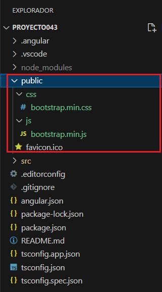

Bootstrap es un framework de CSS que nos facilita y estandariza el desarrollo de sitios web.
Veremos que hay varias maneras de utilizar el framework original de Bootstrap y en conceptos futuros veremos como instalar versiones de Bootstrap adaptadas directamente al ambiente de Angular.
Si todavía no ha trabajado con Bootstrap puede visitar el curso de Bootstrap 5 Ya.
Crearemos un proyecto nuevo para probar las distintas maneras de acceder a Bootstrap 5 desde Angular:
ng new proyecto043
La forma más sencilla es utilizar un CDN donde se encuentre localizado los archivos *.css y *.js del framework de Bootstrap 5.
Debemos modificar el archivo 'index.html' disponiendo los enlaces a los archivos respectivos y con eso ya tenemos acceso al framework de Bootstrap 5 en todo el proyecto:
<!doctype html> <html lang="en"> <head> <meta charset="utf-8"> <title>Proyecto043</title> <base href="/"> <meta name="viewport" content="width=device-width, initial-scale=1"> <link rel="icon" type="image/x-icon" href="favicon.ico"> <link href="https://cdn.jsdelivr.net/npm/bootstrap@5.3.2/dist/css/bootstrap.min.css" rel="stylesheet" integrity="sha384-T3c6CoIi6uLrA9TneNEoa7RxnatzjcDSCmG1MXxSR1GAsXEV/Dwwykc2MPK8M2HN" crossorigin="anonymous"> </head> <body> <app-root></app-root> <script src="https://cdn.jsdelivr.net/npm/bootstrap@5.3.2/dist/js/bootstrap.bundle.min.js" integrity="sha384-C6RzsynM9kWDrMNeT87bh95OGNyZPhcTNXj1NW7RuBCsyN/o0jlpcV8Qyq46cDfL" crossorigin="anonymous"></script> </body> </html>
Modifiquemos la componente (app.component.html) que se ha creado por defecto y hagamos uso de las clases definidas en la librería de Bootstrap 5:
<div class="container">
<h1 class="display-4">Angular con Bootstrap</h1>
<p class="lead">Bootstrap 5 es un framework de CSS que facilita y estandariza el desarrollo de sitios web.
Se ha implementado pensando en adaptarse tanto a las pantallas de equipos de escritorio como a móviles y tablets.</p>
<p>Bootstrap 5 ha sido desarrollado y es mantenido por la comunidad de código abierto.</p>
<button type="button" class="btn btn-primary" data-bs-toggle="modal" data-bs-target="#dialogo1">Información</button>
<div class="modal fade" id="dialogo1">
<div class="modal-dialog">
<div class="modal-content">
<div class="modal-header">
<h5 class="modal-title">Información</h5>
<button type="button" class="btn-close" data-bs-dismiss="modal" aria-label="Close"></button>
</div>
<!-- cuerpo del diálogo -->
<div class="modal-body">
<a href="https://getbootstrap.com/">Ingresar al sitio oficial</a><br>
<a href="https://tutorialesprogramacionya.com/bootstrap5ya">Tutorial de Bootstrap</a>
</div>
<!-- pie del diálogo -->
<div class="modal-footer">
<button type="button" class="btn btn-secondary" data-bs-dismiss="modal">Cerrar</button>
</div>
</div>
</div>
</div>
</div>
<router-outlet />
Si ejecutamos la aplicación podemos ver que tenemos disponible la librería *.css de Bootstrap como también acceso a las funcionalidades de Javascript de Bootstrap en si mismo (de todos los elementos de Bootstrap que requieren Javascript):
Si queremos tener los archivos de Bootstrap en nuestro servidor y no en un CDN tenemos como primer alternativa descargarlos y copiar los archivos a la carpetas 'js' y 'css' que debemos crear en la carpeta 'public', luego tenemos los archivos en forma local:
Solo nos falta cambiar las url en el archivo 'index.html':
<!doctype html> <html lang="en"> <head> <meta charset="utf-8"> <title>Proyecto043</title> <base href="/"> <meta name="viewport" content="width=device-width, initial-scale=1"> <link rel="icon" type="image/x-icon" href="favicon.ico"> <link rel="stylesheet" href="/css/bootstrap.min.css"> </head> <body> <app-root></app-root> <script src="/js/bootstrap.min.js"></script> </body> </html>
Ya podemos ejecutar y tener el mismo resultado:
La tercer forma de instalar la última version de Bootstrap (actualmente la 5) es empleando el gestor de paquetes de Node.Js
Desde la línea de comandos, en la carpeta raiz de nuestro proyecto procedemos a instalar el paquete:
npm install bootstrap --save
La opción --save hace que npm incluya el paquete dentro de la sección de dependencies del archivo package.json en forma automática, lo que evita que tengamos que escribirlo en forma manual.
Si abrimos el archivo 'package.json' podemos ver que se han añadido las tres dependencias en nuestro proyecto:
{
"name": "proyecto043",
"version": "0.0.0",
"scripts": {
"ng": "ng",
"start": "ng serve",
"build": "ng build",
"watch": "ng build --watch --configuration development",
"test": "ng test"
},
"private": true,
"dependencies": {
"@angular/animations": "^19.0.0",
"@angular/common": "^19.0.0",
"@angular/compiler": "^19.0.0",
"@angular/core": "^19.0.0",
"@angular/forms": "^19.0.0",
"@angular/platform-browser": "^19.0.0",
"@angular/platform-browser-dynamic": "^19.0.0",
"@angular/router": "^19.0.0",
"bootstrap": "^5.3.3",
"rxjs": "~7.8.0",
"tslib": "^2.3.0",
"zone.js": "~0.15.0"
},
"devDependencies": {
"@angular-devkit/build-angular": "^19.0.2",
"@angular/cli": "^19.0.2",
"@angular/compiler-cli": "^19.0.0",
"@types/jasmine": "~5.1.0",
"jasmine-core": "~5.4.0",
"karma": "~6.4.0",
"karma-chrome-launcher": "~3.2.0",
"karma-coverage": "~2.2.0",
"karma-jasmine": "~5.1.0",
"karma-jasmine-html-reporter": "~2.1.0",
"typescript": "~5.6.2"
}
}
Como último paso para poder utilizar Bootstrap en nuestro proyecto, debemos modificar el archivo 'angular.json' donde debemos especificar el path de los 2 archivos (en la propiedad 'build', en 'styles' indicamos el path donde se encuenta el archivo *.css y en 'script' el archivo respectivo):
{
"$schema": "./node_modules/@angular/cli/lib/config/schema.json",
"version": 1,
"newProjectRoot": "projects",
"projects": {
"proyecto043": {
"projectType": "application",
"schematics": {},
"root": "",
"sourceRoot": "src",
"prefix": "app",
"architect": {
"build": {
"builder": "@angular-devkit/build-angular:application",
"options": {
"outputPath": "dist/proyecto043",
"index": "src/index.html",
"browser": "src/main.ts",
"polyfills": [
"zone.js"
],
"tsConfig": "tsconfig.app.json",
"assets": [
{
"glob": "**/*",
"input": "public"
}
],
"styles": [
"node_modules/bootstrap/dist/css/bootstrap.min.css",
"src/styles.css"
],
"scripts": [
"node_modules/bootstrap/dist/js/bootstrap.min.js"
]
},
"configurations": {
"production": {
"budgets": [
{
"type": "initial",
"maximumWarning": "500kB",
"maximumError": "1MB"
},
{
"type": "anyComponentStyle",
"maximumWarning": "4kB",
"maximumError": "8kB"
}
],
"outputHashing": "all"
},
"development": {
"optimization": false,
"extractLicenses": false,
"sourceMap": true
}
},
"defaultConfiguration": "production"
},
"serve": {
"builder": "@angular-devkit/build-angular:dev-server",
"configurations": {
"production": {
"buildTarget": "proyecto043:build:production"
},
"development": {
"buildTarget": "proyecto043:build:development"
}
},
"defaultConfiguration": "development"
},
"extract-i18n": {
"builder": "@angular-devkit/build-angular:extract-i18n"
},
"test": {
"builder": "@angular-devkit/build-angular:karma",
"options": {
"polyfills": [
"zone.js",
"zone.js/testing"
],
"tsConfig": "tsconfig.spec.json",
"assets": [
{
"glob": "**/*",
"input": "public"
}
],
"styles": [
"src/styles.css"
],
"scripts": []
}
}
}
}
}
}
Con este método no debemos modificar nada el archivo 'index.html':
<!doctype html> <html lang="es"> <head> <meta charset="utf-8"> <title>Proyecto043</title> <base href="/"> <meta name="viewport" content="width=device-width, initial-scale=1"> <link rel="icon" type="image/x-icon" href="favicon.ico"> </head> <body> <app-root></app-root> </body> </html>
Hemos presentado en este concepto las tres formas de integrar el Bootstrap original dentro de un proyecto Angular, el empleo de uno u otro depende de nuestra decisión. Veremos en los próximos conceptos algunos ejercicios empleando Angular y Bootstrap original.